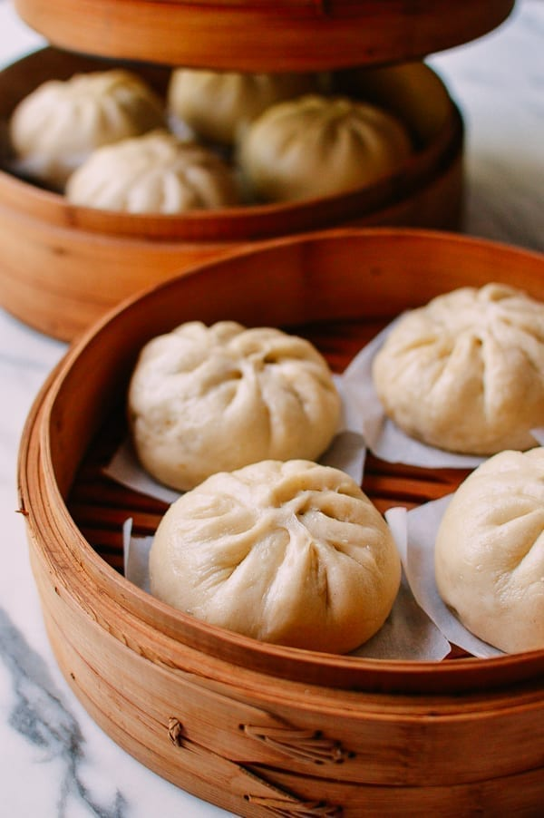

Steamed Pork Buns

Description
This recipe used as a project piece for the Odin Project and the associated images are taken from
The Woks of Life.
"Everyone has staples in their freezer––a pint of ice cream, a box of waffles, or a bag of frozen peas. The freezer staples I can’t do without are frozen rice, frozen man-tou, frozen dumplings and finally, some sort of savory bun, like these steamed pork buns (baozi, 包子 in Chinese).
They’re my emergency meal source! With these on hand, I’m never more than 30 minutes away from a satisfying meal that’s also grab-and-go. I love to make my own steamed buns, because I get to decide which delicious fillings I’m going to make."
Ingredients
FOR THE DOUGH
- 5 g active dry yeast (about 1 1/2 teaspoons, or more precisely, 1.6 teaspoons; best to use weight measurements)
- 8 g granulated sugar (2 teaspoons)
- 1 1/2 cups lukewarm water (355 ml)(355 ml)
- 580 g all purpose flour (about 5 cups, plus extra for kneading and rolling)
FOR THE FILLING
- 700 g ground pork (1 1/2 pounds; can substitute ground chicken or beef)
- 3 tablespoons water (45 ml)
- 3 tablespoons vegetable oil (45 ml)
- 2 tablespoons ginger (about 20g, minced)
- 1 large onion (about 200g, minced)
- 2 tablespoons Shaoxing wine (30 ml, can substitute any other Chinese rice wine or dry cooking sherry)
- 1 tablespoon dark soy sauce (15 ml)
- 1 tablespoon sweet bean sauce (甜面酱; can substitute hoisin sauce)
- 2 tablespoons ground bean sauce
- 1 tablespoon oyster sauce
- 1 teaspoon sugar (4g)
- 1/2 teaspoon white pepper
- 2 teaspoons sesame oil
- 1 1/2 teaspoons cornstarch (mixed with 1 tablespoon water)
- 3 scallions (finely chopped)
Steps
TO MAKE THE DOUGH
- In a large mixing bowl or mixer with a dough hook attachment, completely dissolve yeast and sugar in lukewarm water. Wait 10-15 minutes to let the yeast become active and foam up.
- Add in the flour ½ cup at a time and knead for about 15 minutes. Adjust the last ½ cup flour accordingly. The dough should be soft––not sticky and not too firm. Once the dough is even and smooth, form it into a ball. Cover it with a damp kitchen towel and let it proof one hour in a warm place. (If kneading by hand, knead the dough until it’s as smooth as a baby’s butt!) While it’s proofing, make the filling.
TO MAKE THE FILLING
- Add the ground meat to a large mixing bowl and stir in 3 tablespoons water until well incorporated.
- Now preheat the wok or a cast iron pan until it starts to smoke lightly. Add in 3 tablespoons oil, along with the minced ginger and diced onion. Cook over medium heat until the onions soften. Add in the ground pork and turn up the heat, stirring to break up any large chunks. Cook until all the pork turns pale and opaque––there is no need to brown or crisp the meat.
- Now preheat the wok or a cast iron pan until it starts to smoke lightly. Add in 3 tablespoons oil, along with the minced ginger and diced onion. Cook over medium heat until the onions soften. Add in the ground pork and turn up the heat, stirring to break up any large chunks. Cook until all the pork turns pale and opaque––there is no need to brown or crisp the meat.
- Cook for a couple of more minutes to cook off any remaining liquid. Stir in the cornstarch and water mixture, allowing everything to bubble together for 30 seconds to a minute. Turn off the heat and let the filling cool uncovered. After the filling has cooled, mix in the chopped scallions.
TO ASSEMBLE THE BAOZI (BUNS)
- After the dough has finished proofing, turn it out onto a clean surface dusted with flour. Knead for 2 minutes to get rid of any air pockets. Weigh and divide the dough into 20 equal pieces (each should weigh about 48g-50g).
- Take each dough ball, and with a rolling pin, roll it from the edge towards the center, without actually rolling the center of the dough. The goal is to flatten the dough into a round circle with a thinner edge and thicker center. The difference in thickness should be about 1:2. Add some filling to the center.
- You can start with a smaller amount of filling until you get the hang of the folding/pleating. The buns are folded with one hand holding the skin and filling, and the other hand pleating the edges of the dough disk like an accordion. As you fold, the goal is to make it all the way around the circle, until you’ve sealed it at the top. You’ll be making about 10-15 folds. Lay the buns on a small piece of parchment paper and put it directly on your steaming rack. Repeat until all are assembled. Let the buns proof (covered) for another 15 minutes before steaming.
- If you’d rather not pleat the buns at all, simply pinch the edges of dough around the filling and pinch to seal tightly. Then simply flip the buns seam side down, cover, and proof for 15 minutes.
TO STEAM
- With the buns in the steamer, start with cold water and turn on the heat to medium. Set the timer to 15 minutes.
- After 15 minutes, turn off the heat, and keep the lid on. Let the buns “rest” for 5 minutes before opening the lid. Missing this step will cause the buns to collapse.
TO STORE LEFTOVERS AND REHEAT
- Once the buns are steamed and cooled completely, pack them in an airtight container. They can be refrigerated or frozen.
- Out of the refrigerator, simply microwave the buns for 1-2 minutes. Alternatively, re-steam them for 5 minutes. If re-heating frozen buns, there’s no need to thaw beforehand. Simply steam them for 8 minutes.